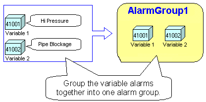
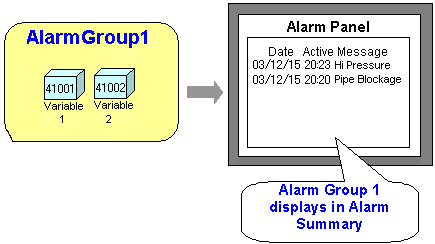

|
|
|
|
|
|
|
|
To display an alarm or event message in a Summary, you need to organize alarms into alarm groups, events into event groups, set up alarms or events in variables, and assign an alarm group, event group, or alarm category to the Summary. See the information below for an overview of the structure and process for displaying alarm or event messages in the Summary. For more information on how to set up an alarm group or event group, see Section 16.2.4, Group Settings.
A group is like a folder that classifies and organizes alarms and events. Before you set up alarms and events, you need to create alarm groups and event groups in the project, and add variables to these groups. When you create a project, AlarmGroup1 is automatically created.
You can create the following types of event groups:
Event Group
System Error Group
System Event Group
For more information on event groups, see Section 16.2.2.2, Event Logging.
You can create multiple alarm groups and event groups if required. See Section 16.3.1.2, Displaying Multiple Groups. You can only create one System Error Group and one System Event Group.
Create variables and set up the properties for alarms and for events. You can set up a variable so that an operator can monitor the variable in the event its value changes. For more information, see the Log User Operations on Variable property described in Section 6.2.3.2, Data Details Tab.
You can define an alarm message for each alarm so that when the variable values go out of range its alarm message appears in the alarm summary. For more information, see Section 16.2.5, Setting Up BOOL Variables.
Once you have created alarm groups and event groups, use a summary to display the alarm and event messages from a group. The summary can also display messages from an alarm category, which is a collection of alarm and event groups. The summary displays the alarm messages generated by variables in the alarm group that it's assigned to.
The following example shows the process in which alarms are displayed on an alarm summary: Variables are assigned to an alarm group, the alarm group is assigned to an alarm summary, and the alarm messages are displayed on the alarm summary.

Assign variables 1 and 2 to an alarm group.



You can use multiple groups to categorize the messages and use a summary for each group. See Section 16.3.1.2, Displaying Multiple Alarm Groups.